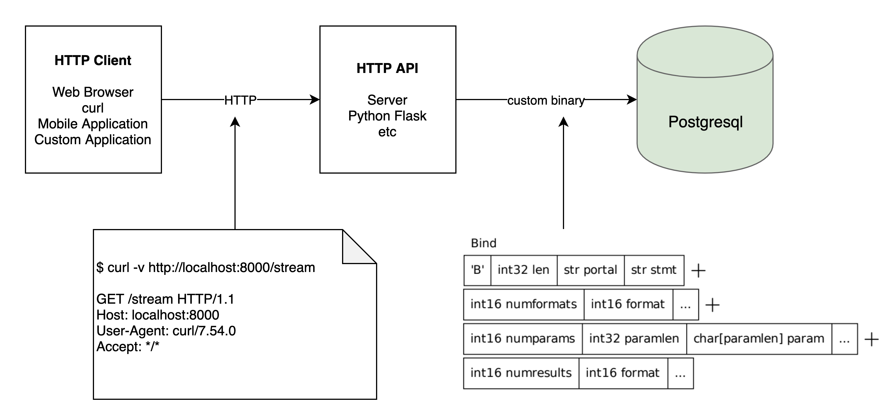

# INFO 450 Fall 2020 <div style="text-align:center;font-size: 1.5;line-height:1.8em;">Week 10.2</div> <div style="text-align:center;font-size: 1.5;line-height:1.8em;">Apr 6, 2021</div> --- # Agenda 1. APIs 2. Creating 3. Consuming --- # What is an API?  * Application Programming Interface * Act as a common interface between systems --- # HTTP / REST API Client - Server model for data/application Intended to be stateless (State is stored in a database potentially) HTTP Protocol (GET, POST, PATCH, DELETE) Client makes a request to the server, server responds with data/response --- # HTTP GET ``` GET / HTTP/1.1 Host: example.com ``` HTTP GET Response: ``` HTTP/1.1 200 OK Date: Mon, 23 May 2005 22:38:34 GMT Content-Type: text/html; charset=UTF-8 Content-Length: 155 Last-Modified: Wed, 08 Jan 2003 23:11:55 GMT Server: Apache/1.3.3.7 (Unix) (Red-Hat/Linux) ETag: "3f80f-1b6-3e1cb03b" Accept-Ranges: bytes Connection: close <html> <head> <title>An Example Page</title> </head> <body> <p>Hello World, this is a very simple HTML document.</p> </body> </html> ``` --- # HTTP POST ``` POST /test HTTP/1.1 Host: foo.example Content-Type: application/x-www-form-urlencoded Content-Length: 27 field1=value1&field2=value2 ``` HTTP POST Response: ``` {"key": "value"} ``` --- # How do we do that? Web Browser: URL location text: Enter a web site, http://www.google.com, and it issues an HTTP GET Website 'form' can issue an HTTP POST or GET cUrl: command line application, linux, C Library ```bash $ curl https://google.com <HTML><HEAD><meta http-equiv="content-type" content="text/html;charset=utf-8"> <TITLE>301 Moved</TITLE></HEAD><BODY> <H1>301 Moved</H1> The document has moved <A HREF="https://www.google.com/">here</A>. </BODY></HTML> ``` ```bash curl -d '{"key": "value"'}' -H 'Content-Type: application/json' https://example.com/login ``` --- # In Python * 'requests' package * Install via anaconda * <a href="https://requests.readthedocs.io/en/master/">https://requests.readthedocs.io/en/master/</a> ```python >>> r = requests.get('https://api.github.com/user', auth=('user', 'pass')) >>> r.status_code 200 >>> r.headers['content-type'] 'application/json; charset=utf8' >>> r.encoding 'utf-8' >>> r.text '{"type":"User"...' >>> r.json() {'private_gists': 419, 'total_private_repos': 77, ...} ``` ```python >>> r1 = requests.post('https://httpbin.org/post', data=payload_tuples) >>> payload_dict = {'key1': ['value1', 'value2']} >>> r2 = requests.post('https://httpbin.org/post', data=payload_dict) >>> print(r1.text) { ... "form": { "key1": [ "value1", "value2" ] }, ... } >>> r1.text == r2.text True ``` But let's look at the server side --- # Flask * `flask` package * Install via anaconda * <a href="https://flask.palletsprojects.com/en/1.1.x/">https://flask.palletsprojects.com/en/1.1.x/<a/> ```python from flask import Flask app = Flask(__name__) @app.route('/') def hello_world(): return 'Hello, World!' ``` ```bash $ export FLASK_APP=hello.py $ flask run --host=0.0.0.0 * Running on http://127.0.0.1:5000/ ``` --- # Routes ```python @app.route('/') def index(): return 'Index Page' @app.route('/hello') def hello(): return 'Hello, World' ``` ```bash $ curl http://localhost:5000/ Index Page $ curl http://localhost:5000/hello Hello, World ``` --- # Passing parameters ```python from markupsafe import escape @app.route('/user/<username>') def show_user_profile(username): # show the user profile for that user return 'User %s' % escape(username) @app.route('/post/<int:post_id>') def show_post(post_id): # show the post with the given id, the id is an integer return 'Post %d' % post_id @app.route('/path/<path:subpath>') def show_subpath(subpath): # show the subpath after /path/ return 'Subpath %s' % escape(subpath) ``` --- --- --- --- ---